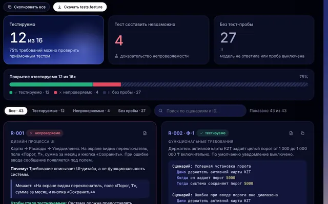
Тест-проба Given/When/Then
К каждому требованию агент пишет приёмочный тест. Не получилось — доказательство непроверяемости с цитатой.
ReqLens проверяет документ требований по ISO/IEC/IEEE 29148 и IEEE 830 и пишет отчёт на русском: дословная цитата, место, серьёзность и готовая формулировка исправления.
Результат
Возможности

К каждому требованию агент пишет приёмочный тест. Не получилось — доказательство непроверяемости с цитатой.
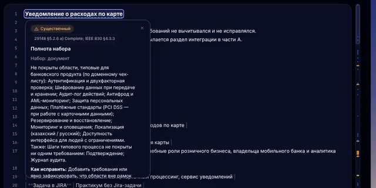
Дефекты подчёркнуты прямо в тексте документа: клик — объяснение, пункт стандарта и готовая формулировка.
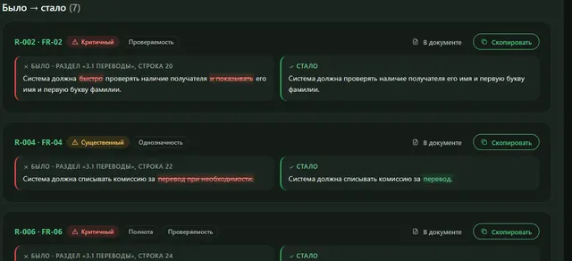
Исправленный документ и diff «было → стало»; повторная проверка показывает балл до и после.
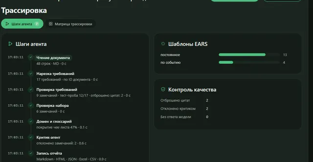
Каждая цитата проверяется кодом по тексту, выдуманное отбрасывается; критик объединяет дубли и калибрует серьёзность.
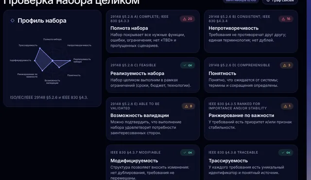
Полнота для банковских продуктов: 2FA, лимиты, идемпотентность, AML, персональные данные, SLA — только с цитатами.
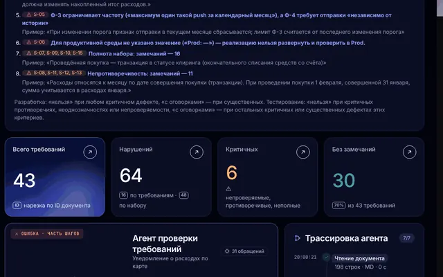
Балл документа, готовность к разработке, радар по критериям и «цена дефекта» — считает код, а не модель.
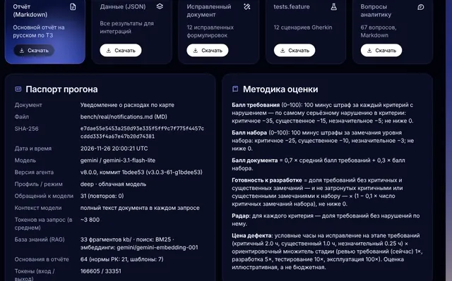
Локальная модель через Ollama — документ банка не покидает контур. Без ключа работают правила.
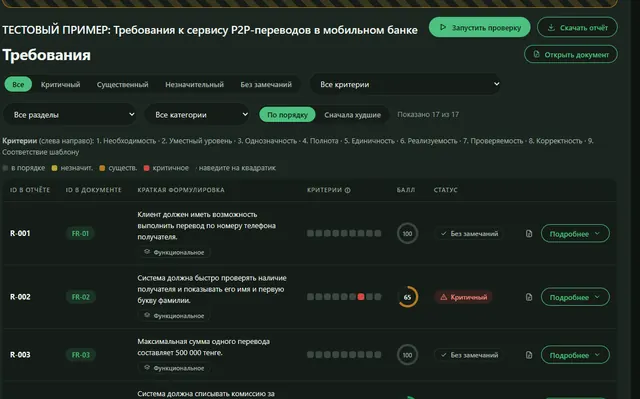
Excel-трассировка, CSV для Jira, report.json, вопросы заказчику, сравнение версий, GitHub Action, Docker.
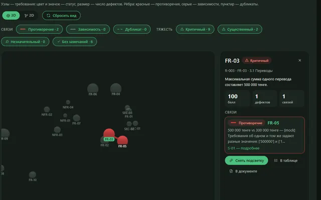
Противоречия, зависимости и дубли; клик по узлу — детали и цепочка конфликта.
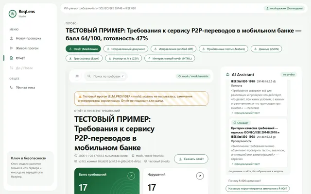
Перетащите файл — шаги идут вживую; ассистент отвечает на «Почему S-01 критичное?» со ссылками.
Как это работает

Интерфейс
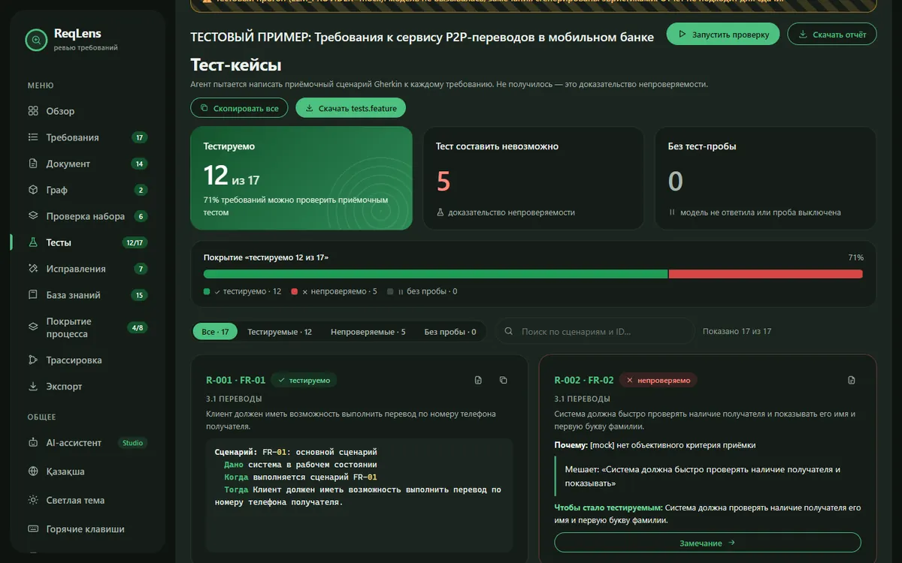
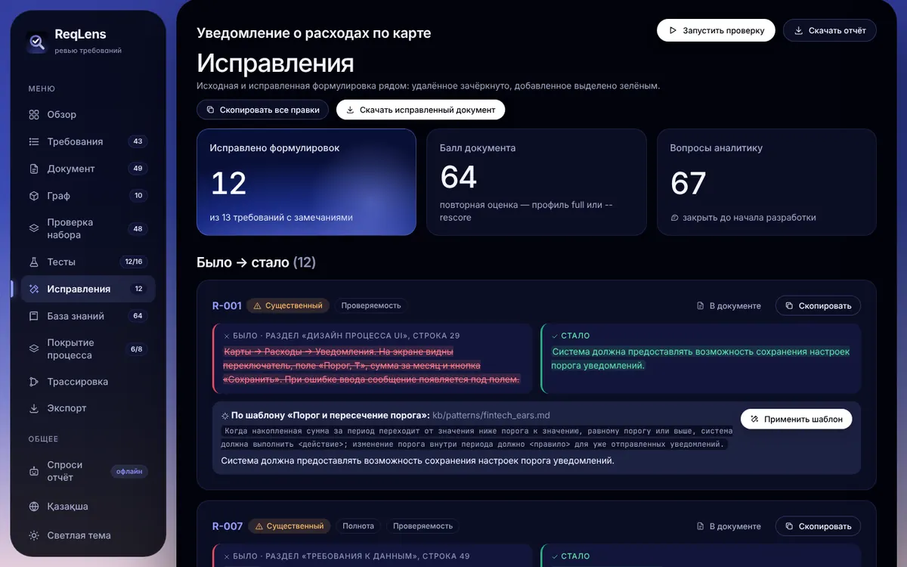
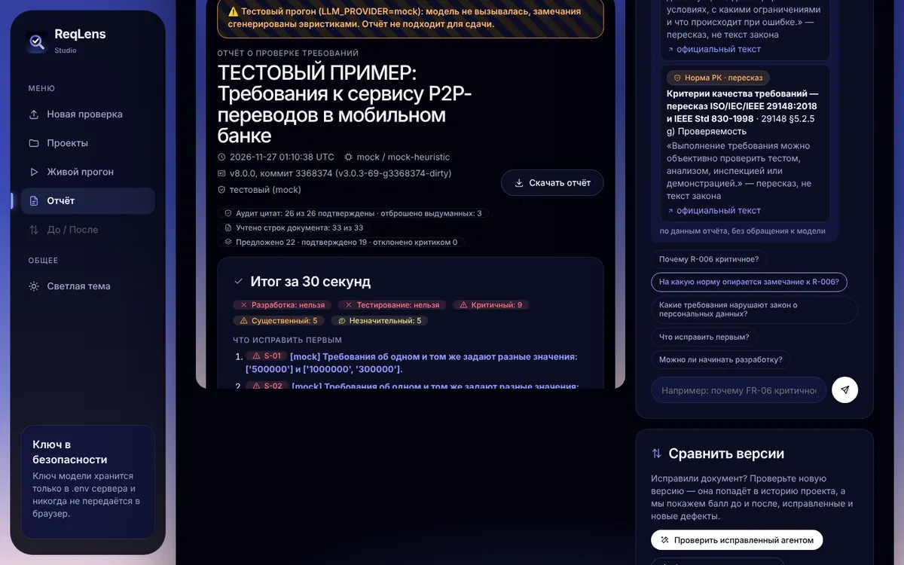
Бенчмарк
| Документ | Найдено | Recall | Precision |
|---|---|---|---|
| Оплата услуг | 13 из 13 | 100 % | 92 % |
| Онлайн-кредит | 14 из 14 | 100 % | 100 % |
| Открытие счёта | 14 из 14 | 100 % | 100 % |
| Онлайн-депозит (қазақ тілі) | 13 из 13 | 100 % | 100 % |
| Перевыпуск карты (DOCX, таблицы) | 13 из 13 | 100 % | 100 % |
| Итого | 67 из 67 | 100 % | 98 % |
Цифры считает код (bench/run.py), а не модель. Независимая оценка — разметка со стороны по bench/external/PROTOCOL.md.
Быстрый старт
python review.py bench/real/notifications.md reports/report.md --profile deepСначала pip install -r requirements.txt и ключ Gemini в .env. Без ключа: LLM_PROVIDER=rules — только правила агента.